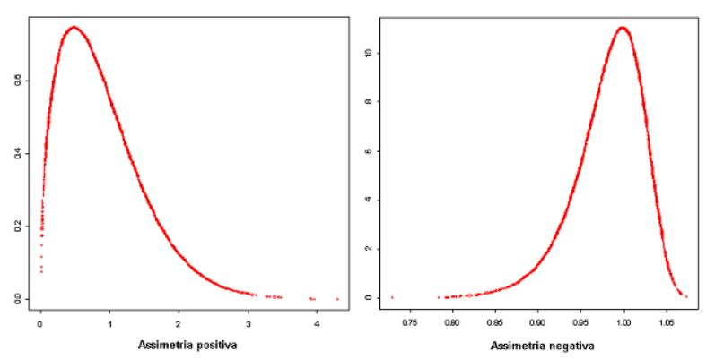
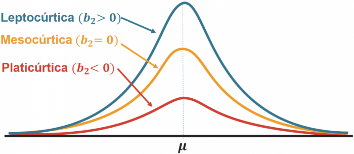

Analisando um Portfólio de Ações [R] [Shiny]
Esse projeto é um dashboard interativo onde é possível analisar um portfólio de até 5 ativos, a partir de 4 visões (retorno, desvio padrão, assimetria e curtose).
Todo o dashboard foi construído com a linguagem R, usando as ferramentas:
- Shiny (Reatividade do Dashboard)
- Flexdashboard (Template Rápido de Dashboards)
- Highcharter (Visualização Gráfica em JavaScript)
- Tidyquant (Pacote R que traz dados do Yahoo Finance)
Objetivo do projeto foi gerar conjunto de visualizações relevantes para uma análise descritiva de um portfólio, utilizando os conhecimentos aprendidos no livro Reproducible Finance with R. Como esta é uma aplicação dos conhecimentos do livro, sinta-se a vontade para utilizá-la como complemento ao conteúdo do livro e seus estudos pessoais.
Aproveite a interatividade dos gráficos no dashboard e experimente os filtros de tempo, gráficos reativos e outras funcionalidades que o Highcharter disponibiliza para aperfeiçoar a sua análise.
O código inteiro do projeto está disponível neste link do Github.
INPUTS
TICKER: Como o dash se alimenta com dados do Yahoo Finance, todos os ativos da plataforma podem ser adicionados ao dashboard e, portanto, devem cumprir o padrão de ticker do mesmo.
| Ação Brasileira | Ação Americana |
|---|---|
| WEGE3.SA (WEG) | SBUX (Starbucks) |
Em caso de dúvidas do ticker correto, acesse o Yahoo Finance para a captura dos ativos desejados.
PESOS: Certifique-se de que os pesos somem 100% para que os cálculos do dashboard sejam efetuados. Para isso, o botão ‘Calcular’ fica disponível somente quando os pesos somam 100%.
DATAS: Quando selecionar as datas de início e fim de análise, atente-se para que todas as 5 ações estejam disponíveis neste período. Caso alguma cia não esteja disponível no intervalo os cálculos do portfólio irão quebrar. –> (Este caso está incluso na lista de melhorias abaixo)
PERIODICIDADE e JANELA MÓVEL: Utilize estas opções para detalhar sua análise. Os log-retornos serão analisados de acordo com a periodicidade selecionada (anual, mensal e semanal) e a janela móvel te permite observar o comportamento histórico de medidas de risco do portfólio, como desvio padrão, assimetria e curtose.
Resumo das 4 visões
Log-Retornos: Para avaliarmos as distribuições históricas dos retornos, é necessário utilizar o log-retorno para equalizar os pesos para os retornos reais positivos e negativos. Acesse esse link para uma maior compreensão do uso necessário do log-retorno na avaliação de retornos acumulados.
Desvio Padrão: Indica o grau de dispersão dos log-retornos dos ativos em relação a sua média. Quanto maior o desvio padrão, mais volátil (risco) é o log-retorno do ativo.
Assimetria: Descrever o comportamento histórico dos retornos através da assimetria de sua distribuição em relação a média. Como a média dos log-retornos tendem a zero, assimetria negativa indica forte presença de retornos positivos, enquanto assimetria positiva indica grandes retorno negativos. 
Curtose: Descreve a intensidade de valores extremos na distribuição de retornos. Curtose baixa significa uma grande quantidade de retornos extremos no histórico do ativo e curtose alta há pouca quantidade de retornos extremos.
Obs.: Ilustrações retiradas do Portal Action
Lista de Melhorias
- Permitir o input de 4 ativos ou menos no portfólio.
- Permitir o input 5 ativos ou mais no portfólio.
- Permitir o cálculo do portfólio em intervalos de tempo que algum ativo não esteja disponível.
- Adicionar novas páginas contendo CAPM, Sharpe Ratio e Frama-French Model
- Refazer o Dashboard utilizando Shiny ou Shinydashboard.
- Modularizar o dash para organizar o script, com um módulo para cada página.
- Construir o app usando Golem para colocar o app em produção utilizando um container (docker) em alguma nuvem na web.
Obs.: A sequência das melhorias não indica ordem de prioridades.